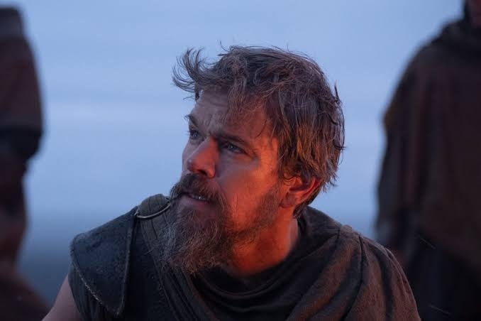
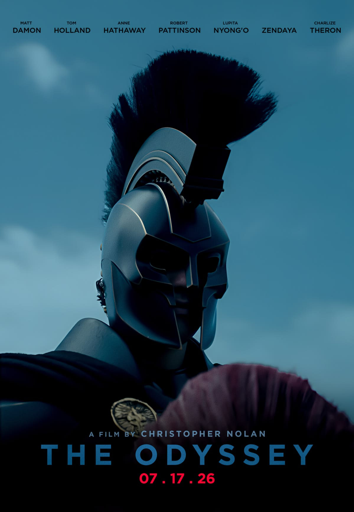
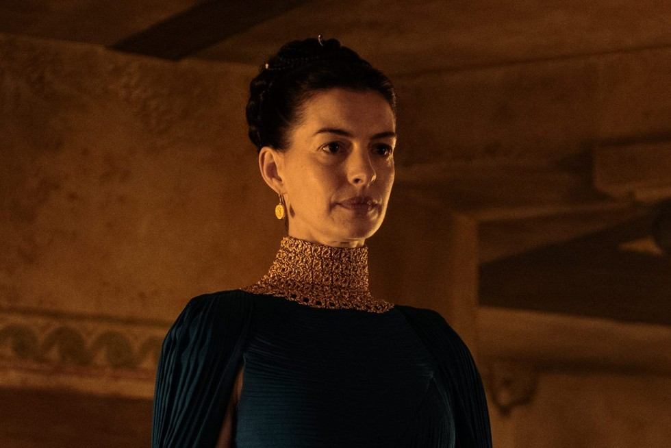
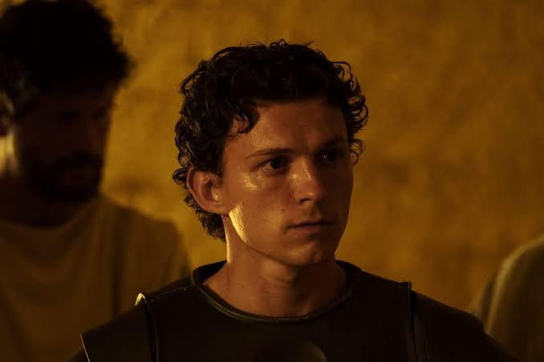
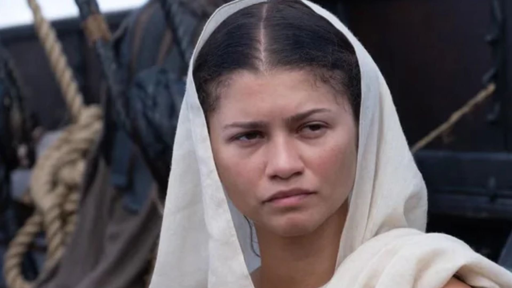
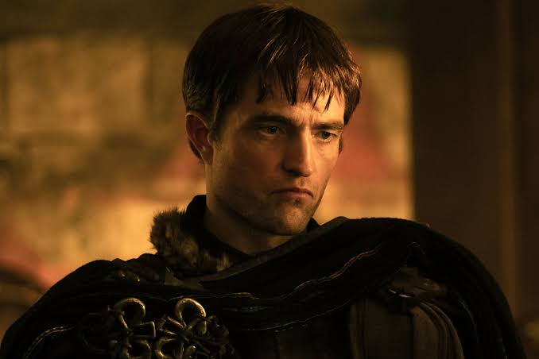
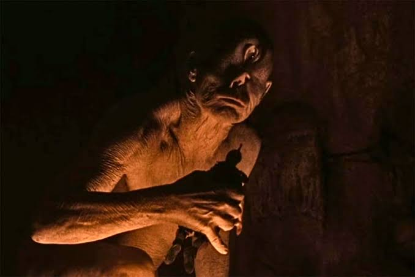

Odisseu
Rei de Ítaca e herói da história. É conhecido por ser muito esperto, foi dele a ideia do cavalo de Troia.

A Odisseia é o poema de Homero que conta a volta de Odisseu para casa depois da Guerra de Troia. Em 2026 a história virou filme, dirigido por Christopher Nolan.
Aqui estão alguns dos personagens mais importantes da história.

Rei de Ítaca e herói da história. É conhecido por ser muito esperto, foi dele a ideia do cavalo de Troia.

Esposa de Odisseu. Espera por ele durante 20 anos e engana os pretendentes que querem casar com ela.

Filho de Odisseu e Penélope. Sai de Ítaca para procurar notícias do pai e depois ajuda ele a voltar ao trono.

Deusa da sabedoria. Protege Odisseu e o ajuda várias vezes durante a viagem, muitas vezes disfarçada.

O pior dos pretendentes de Penélope. Fica no palácio de Odisseu gastando tudo e planeja matar Telêmaco.

Ciclope gigante, filho de Poseidon. Prende Odisseu e seus homens numa caverna, mas acaba sendo enganado.